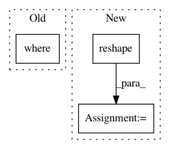

7c9123131cb9e353ee8f6e1245f41d77f85af713,deepchem/models/tensorgraph/layers.py,AtomicConvolution,create_tensor,#AtomicConvolution#Any#Any#,3812
Before Change
else:
for j in range(len(self.atom_types)):
cond = tf.equal(Nbrs_Z, self.atom_types[j])
sym.append(tf.reduce_sum(tf.where(cond, rsf, rsf_zeros), 2))
layer = tf.stack(sym)
layer = tf.transpose(layer, [1, 2, 0]) // (l, B, N) -> (B, N, l)
After Change
// Compute the distances and radial symmetry functions.
D = self.distance_tensor(X, Nbrs, self.boxsize, B, N, M, d)
R = self.distance_matrix(D)
R = tf.reshape(R, [1] + R.shape.as_list())
rsf = self.radial_symmetry_function(R, rc, rs, re)
if not self.atom_types:
cond = tf.to_float(tf.not_equal(Nbrs_Z, 0.0))
cond = tf.reshape(cond, R.shape)
layer = tf.reduce_sum(cond * rsf, 3)
else:
sym = []
for j in range(len(self.atom_types)):
cond = tf.to_float(tf.equal(Nbrs_Z, self.atom_types[j]))
In pattern: SUPERPATTERN
Frequency: 3
Non-data size: 3
Instances
Project Name: deepchem/deepchem
Commit Name: 7c9123131cb9e353ee8f6e1245f41d77f85af713
Time: 2018-08-22
Author: peastman@stanford.edu
File Name: deepchem/models/tensorgraph/layers.py
Class Name: AtomicConvolution
Method Name: create_tensor
Project Name: nipy/dipy
Commit Name: 5607c24325cccb0973cbf82954356c39b6410b7a
Time: 2013-08-06
Author: matthieu.dumont@usherbrooke.ca
File Name: dipy/segment/mask.py
Class Name:
Method Name: applymask
Project Name: neurodsp-tools/neurodsp
Commit Name: 08be819a5fd8edd74a59dcc363c9e7694ca009d2
Time: 2019-09-01
Author: tdonoghue@ucsd.edu
File Name: neurodsp/utils/outliers.py
Class Name:
Method Name: remove_nans